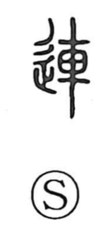

連

Uncategorized
Kun: tsuranaru, tsuraneru, tsureru, tsure | On: ren
to link ・ to connect ・ to take along ・ to continue ・ in succession
Explanation
連 combines 車 and the movement indicator 辵, forming a compound that early lexica gloss as “to carry” or “to bear on the shoulder,” evoking a shoulder-pole with a basket used for transport. In sense it converges with 聯, whose ancient image is of threading trophies—the severed ears of enemies—onto a cord, a stark picture of items strung together in a row. From this concrete idea of things joined and following one after another, 連 comes to mean linking, arranging in sequence, and continuing. In Japanese usage the meaning naturally extends to leading or taking someone along, as when walking a dog or going out with a child in tow.